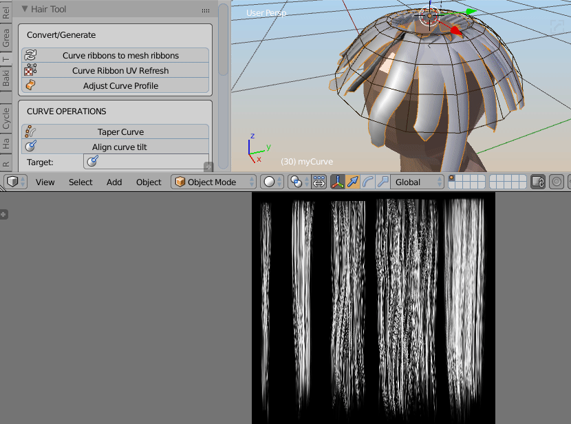

Hair UV's¶
In Hair Tool UVs are stored in curve ribbons material.
What this mean is that, if you have two curve ribbons with same material, they will both have same UV.
If you wan to separate UV you have to separate (un-instance) material on both curves. But if you want two curves to have same UV - just link Material from one to the other.
Defining UV's¶

To UV map curve ribbons go into UV editor and search for: ‘Hair UV’ operator under spacebar search menu, and choose 'Draw UV's for Hair'
Use Left click and drag rectangular shape, to define the UV bounds for texture. Or just drag corners of existing uv box and adjust its shape.
To remove UV box just hover your mouse over one of uv boxes and press [Delete] key
To reset UV press [shift + Delete]
Offset UV¶
Offsetting UV, moves UV points more toward the root or tip on hair strand. See video below:
As a result you can adjust how the texture looks on both strands ends.
To use UV Offset just hover you mouse over UV box and scroll with MMB.